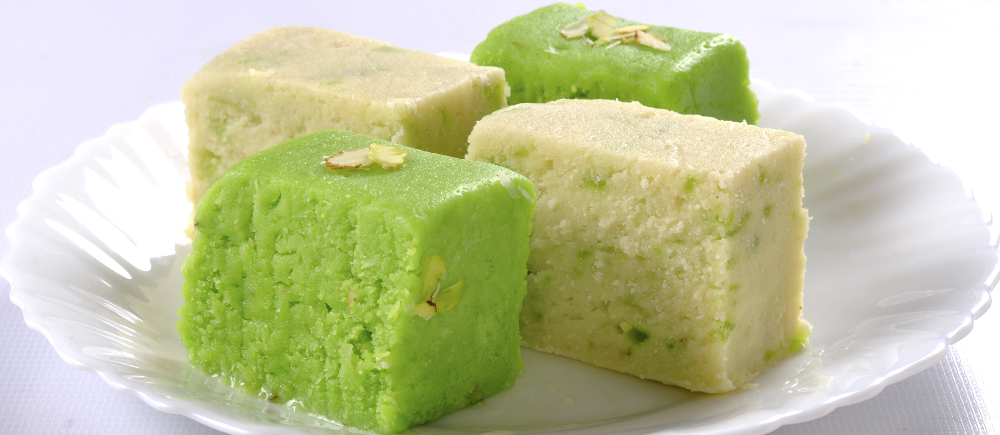

Barfi, also known as Burfi, is a classic Indian sweet made from condensed milk, sugar, and a variety of flavorings and nuts. It's known for its rich, creamy texture and is often enjoyed during festivals and celebrations.
Ingredients
- 1 cup Milk Powder
- 1/2 cup Condensed Milk
- 1/4 cup Milk
- 2 tbsp Ghee
- 1/2 tsp Cardamom Powder
- 1/4 cup Chopped Nuts (cashews, almonds)
- 1/4 cup Desiccated Coconut (for garnish)
Step-by-Step Instructions
- Heat ghee in a non-stick pan over medium heat. Add milk and bring to a simmer.
- Add milk powder and condensed milk to the pan. Stir continuously to prevent lumps and ensure even cooking.
- Cook the mixture, stirring constantly, until it starts to pull away from the sides of the pan and forms a thick consistency (about 10-15 minutes).
- Add cardamom powder and mix well. Stir in chopped nuts.
- Transfer the mixture to a greased plate or tray and spread it evenly. Let it cool for about 30 minutes.
- Once set, cut into squares or diamond shapes. Garnish with desiccated coconut if desired.